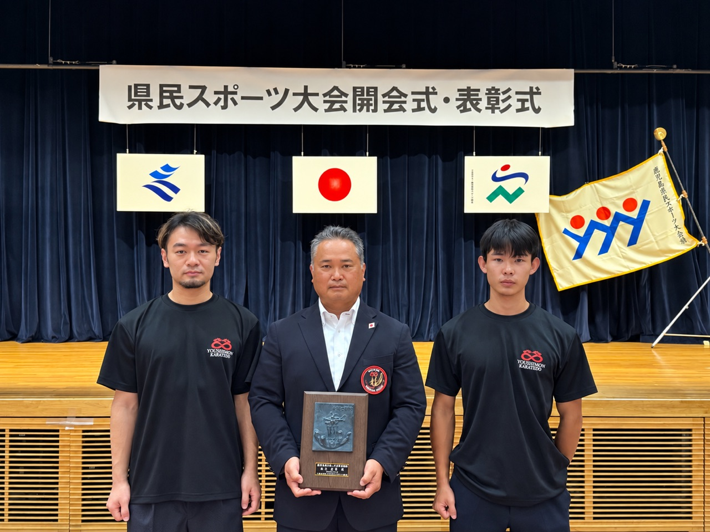
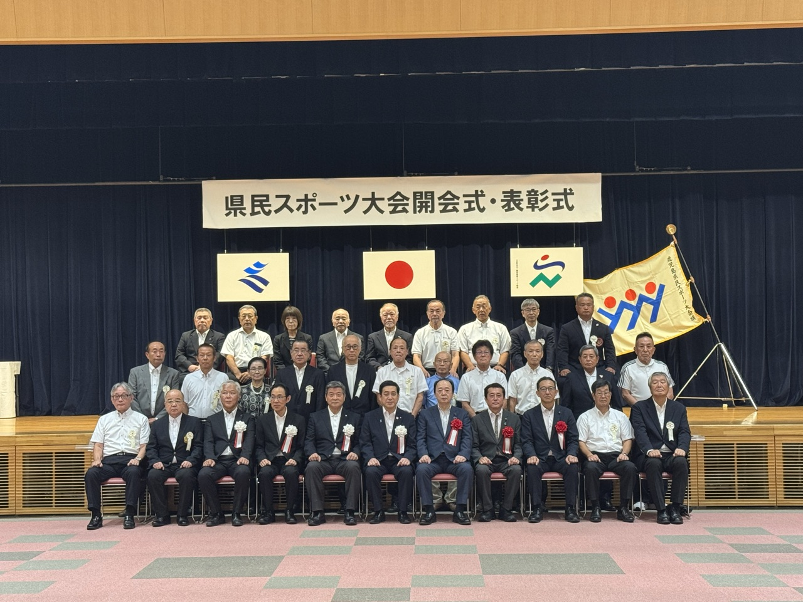

宗師 南谷拳龍が スポーツ少年団顕彰を賜りました
９月１９日、鹿児島県庁に於いて 第７８回 鹿児島県民スポーツ大会 の開会式ならびに表彰式が執り行われ、宗師 南谷 拳龍 が スポーツ少年団顕彰※スポーツ少年団の指導・育成に長年尽くした指導者に贈られる表彰 を賜りました。
日頃より楊心門を支えてくださる皆様、門下生とご家族の皆様のおかげさまでございます。誠に有難うございました。

総本山にて ― 開祖へのご報告
表彰式を終え、その足で総本山へ向かい、開祖 枦山 拳龍 創師のもとへ受賞のご報告と感謝をお伝えいたしました。
三十年前に師の道を引き継いで以来、師匠を信じてただ一途に歩んでまいりました。こうして形として評価をいただきましたことに、【千日の稽古を鍛とし、万日の稽古を錬とす】※千日続けて稽古してようやく「鍛」、万日重ねてはじめて「錬」に至るという、積み重ねの尊さを説く教え という言葉の重みをあらためて感じております。
「周りの皆様方のおかげさまです。感謝しかありません」― 宗師の言葉でございます。
第７８回 鹿児島県民スポーツ大会 開会式
開会式には 塩田 鹿児島県知事 をはじめ、日高県議会議長、県内スポーツ界の錚々たる方々がご出席され、緊張感に包まれるなかで執り行われました。県内１１の各地区チームが団結の気合いを入れ、大きな盛り上がりを見せておりました。
この日より県内各地で、多種目にわたる競技が繰り広げられます。
南大隅町教育委員会 の方々も多数ご出席され、お祝いのお言葉を頂戴いたしました。
また塩田知事とは、昨年７月に鹿児島県桜島にて開催された 第11回 防具付全日本空手道選手権大会 へご来賓としてお越しいただいて以来、約一年ぶりにお会いし、今後の活動へ激励のお言葉を賜りました。

学んだ空手を、後世へ
今回の顕彰は、楊心門に関わるすべての皆様と共に頂戴したものでございます。学んだ空手をしっかりと後世に伝えられるよう、これからも稽古を積み重ねてまいります。今後とも変わらぬご支援・ご指導のほど、どうぞよろしくお願い申し上げます。